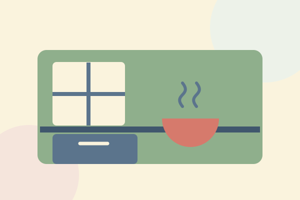
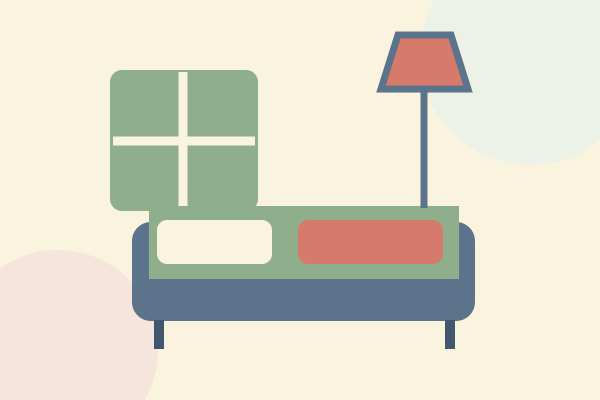
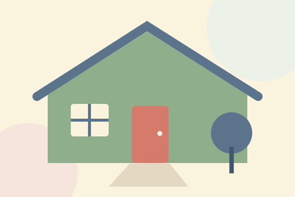

Daily Living & Domestic Assistance
Personalised, practical support with everyday living tasks, personal care routines and assistance around the home.
Explore this support : Daily Living & Domestic AssistanceSupport with purpose
Respite support arranged around individual needs, routines and preferences.

We offer flexible, personalised respite support in the participant’s own home or suitable short-term accommodation.
Support is arranged around each participant’s individual needs, routines and preferences, with a focus on comfort, safety and consistency.
Short-term accommodation can be arranged upon request, subject to availability, individual support requirements and NDIS funding eligibility. Please contact our team to discuss the options and arrangements relevant to your circumstances.
We aim to provide a comfortable, consistent support experience. Availability, suitability and any relevant funding requirements must be confirmed individually; an enquiry does not confirm accommodation or a booking.
Keep exploring

Personalised, practical support with everyday living tasks, personal care routines and assistance around the home.
Explore this support : Daily Living & Domestic Assistance
Personalised daily living support for NDIS participants who need ongoing assistance at home or in a shared living environment.
Explore this support : Supported Independent Living (SIL)Help to understand your NDIS plan, connect with suitable services and make informed choices about support.
Explore this support : Support CoordinationTell us what you’re looking for. We’d love to hear from you and discuss how we may be able to help.